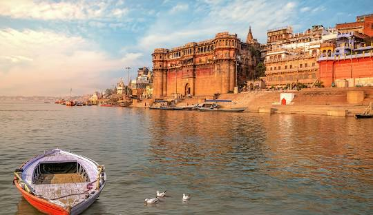
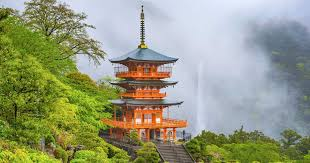
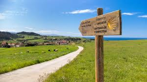

𝟱 𝘃𝗶𝗮𝗷𝗲𝘀 𝗲𝘀𝗽𝗶𝗿𝗶𝘁𝘂𝗮𝗹𝗲𝘀 𝗾𝘂𝗲 𝗱𝗲𝗯𝗲𝘀 𝗵𝗮𝗰𝗲𝗿 𝗲𝗻 𝗹𝗮 𝘃𝗶𝗱𝗮
El turismo espiritual se está convirtiendo en la principal modalidad de los viajeros occidentales, si bien para otros países la peregrinación forma parte de su cultura. En este artículo vamos a analizar algunos destinos espirituales del mundo, si bien mientras llegamos nos percataremos que es el camino y no el destino lo más importante.
Luego llega la inmersión en el río, el punto culminante del festival. Según los hindúes, el baño en el río sagrado purifica los pecados y ofrece la salvación. Según la mitología hindú, los dioses y los demonios entraron en guerra por un jarro sagrado, el Kumbh, que contenía un elixir de la inmortalidad.

El Kumano Kodo también conocido como el Camino de Kumano, es una red de caminos que conectan los tres grandes santuarios conocidos grupalmente como Kumano Sanzan.

Monte Athos o Monte Atos es el nombre que recibe el área montañosa que conforma la península más oriental de las tres que se extienden hacia el sur desde la península Calcídica, situada en Macedonia Central, al norte de Grecia. En griego moderno se la llama Άγιον Όρος.
 Machu Picchu es el sitio arqueológico inca más sobresaliente debido a su creativo diseño urbano, la belleza de su arquitectura y el fino trabajo en piedra de sus construcciones. En su planificación se aprovechó notablemente la topografía de la cima de la montaña a la que transformó en una imponente llaqta.
Machu Picchu es el sitio arqueológico inca más sobresaliente debido a su creativo diseño urbano, la belleza de su arquitectura y el fino trabajo en piedra de sus construcciones. En su planificación se aprovechó notablemente la topografía de la cima de la montaña a la que transformó en una imponente llaqta.

Camino de Santiago (España)
Camino de Santiago es la denominación que tiene un conjunto de rutas de peregrinación cristiana de origen medieval que se dirigen a la tumba de Santiago el Mayor, situada en la catedral de Santiago de Compostela.
